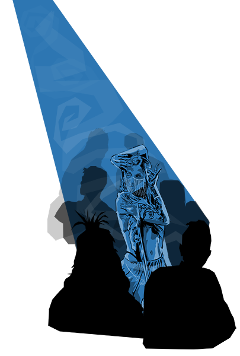
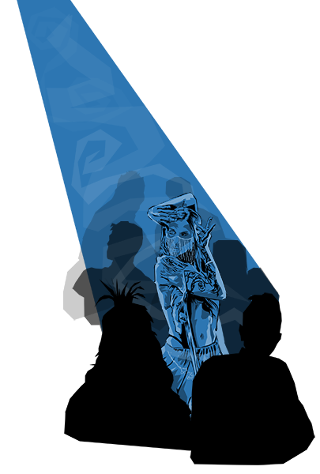

AN ELECTRO-ORIENTAL EPIC GUSHING from the rhythmic soundscape of ONUR SEÇKİ
join THE NOMAD on a techno-oriental pilgrimage into a defiant wasteland of exotic atrocities in pursuit of a mystic belly dancer... who might save the world.
ONUR SEÇKİ is an independent music composer who grew up in the eastern lands and moulded his spirit with western influences. Now as an experienced percussionist, after ending his career in chemical engineering, his musical creations are inspired by his personal journey. In the manner of a nomad whose walk is guided by the unknown, he seeks to extract himself from an overly analytical schema in order to tint his productions with a more spiritual meaning. His musical journey began with a small flick on the skin of the Darbuka, this oriental percussion instrument recognizable for its traditional sound. Thanks to his academic training in sound engineering and music production alongside his experience on stage as a percussionist, the artist has developed several strings to his bow over the years. His compositions are rich in this diversity and combine ethnic inspirations and electronic music with technique and originality.
Nomadyca is the world now. The west is long gone and all remains is the east. No more civilizations. Just the tribes of the wasteland: Living at the core of humanity, Worshipping the ancient magic, That is the rhythm and the light. There is but one city. The cyber-citadel of Fhan. The last resort of the west, Populated with people who had forgotten to feel, Working for one reason only: Solving the enigma of the East’s glamor, to fathom the power of the hex. So they experiment, hoping one day They can cure the world. If they can enslave it, capture But they cannot For it is not for anyone to hold. It’s beating through the pulse And booming through the amps The Nomad was born in the citadel. Stamped and nurtured to be a cyberslave, Like all citizens, he was lectured to be free of sensations, Not to be succumbed by the devil they study. That wasn’t Kismet. This is the Nomad’s story, Of how he roamed the world and learnt the mystic arts This is how he saved Nomadyca.